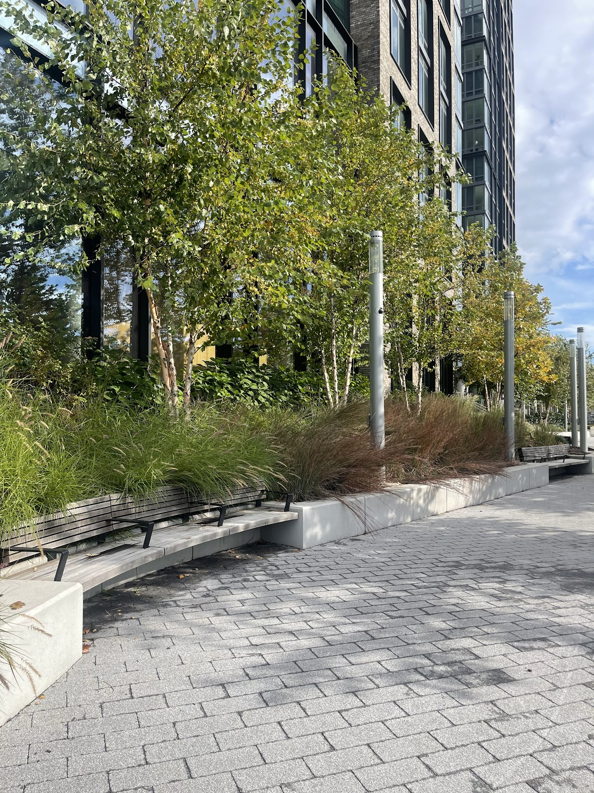
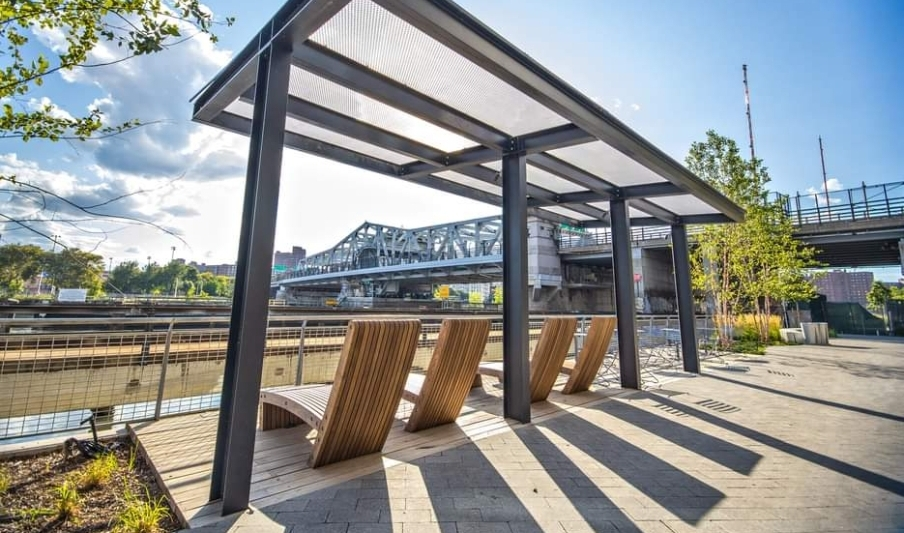
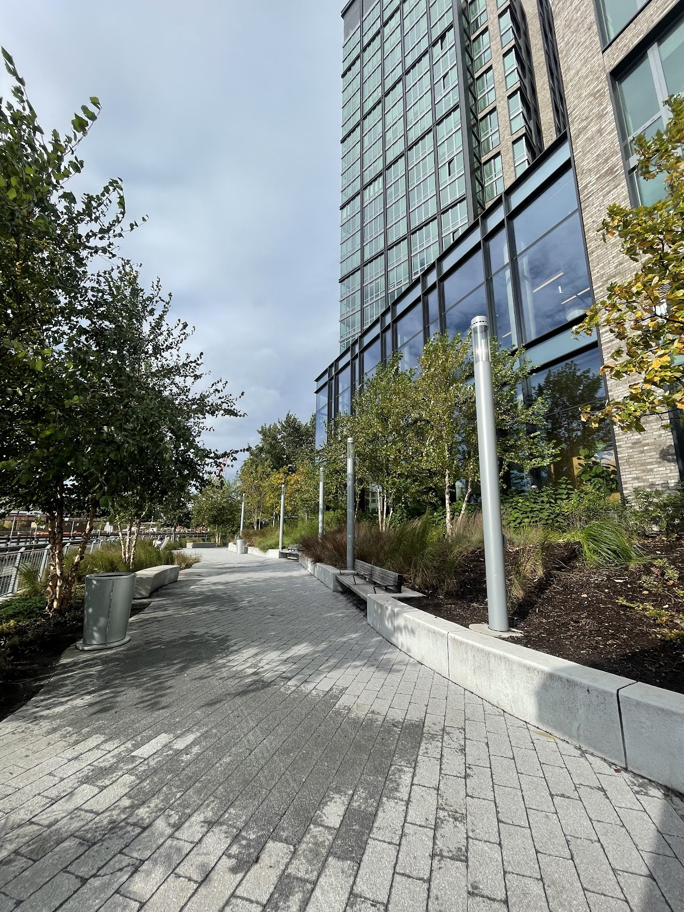
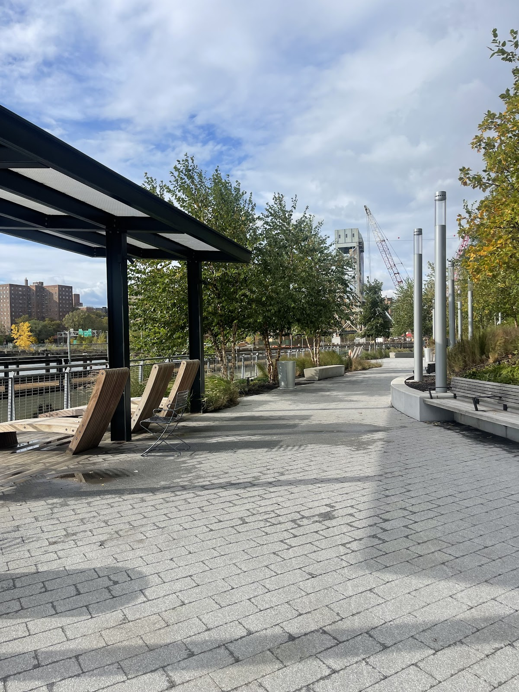

Public / private
Mott Haven Water Front
Public private patnership to fix up some nonexistant waterfront in the Mott Haven neighborhood of the Bronx, featuring parks and recreational spaces.
Background
The Mott Haven waterfront underwent significant redevelopment in the early 21st century, transforming from an industrial zone into a public space with parks, walkways, and access to the Harlem River. This project is part of broader efforts to improve public access to waterfronts across New York City.
Original AI-assisted background; not independently verified.
From the original map
From nothing to pretty nice pretty fast
Check current access before visiting. A place on this map is not necessarily open to the public.
Nearby places
Straight-line distances, not walking routes.
Discussion & corrections




40.80744, -73.93115 · Explore the surrounding area ↗